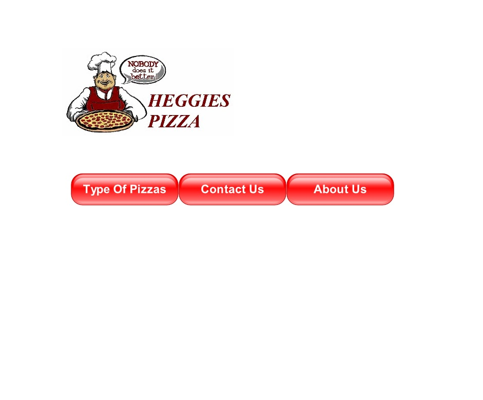
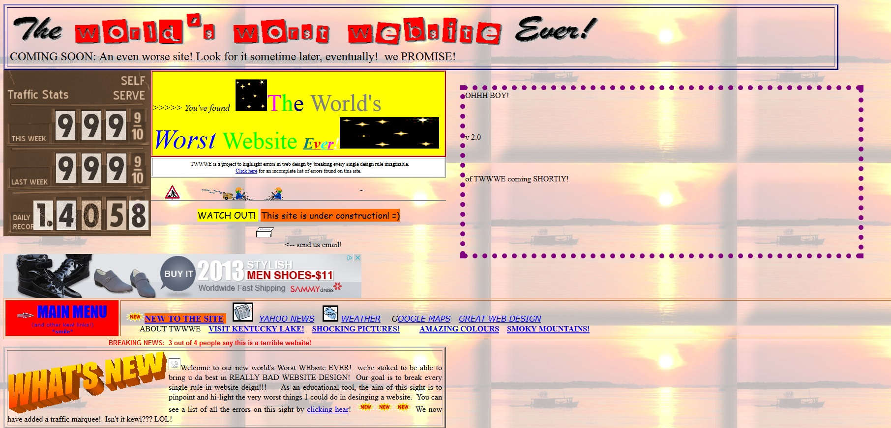
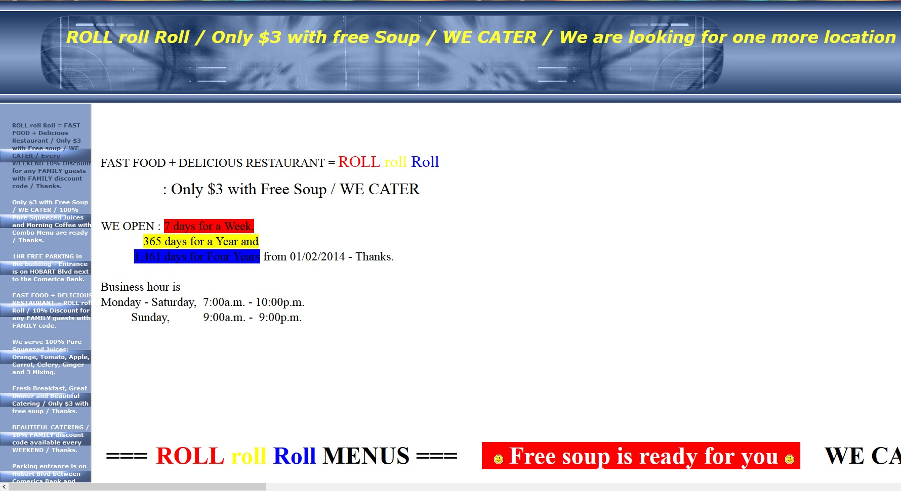
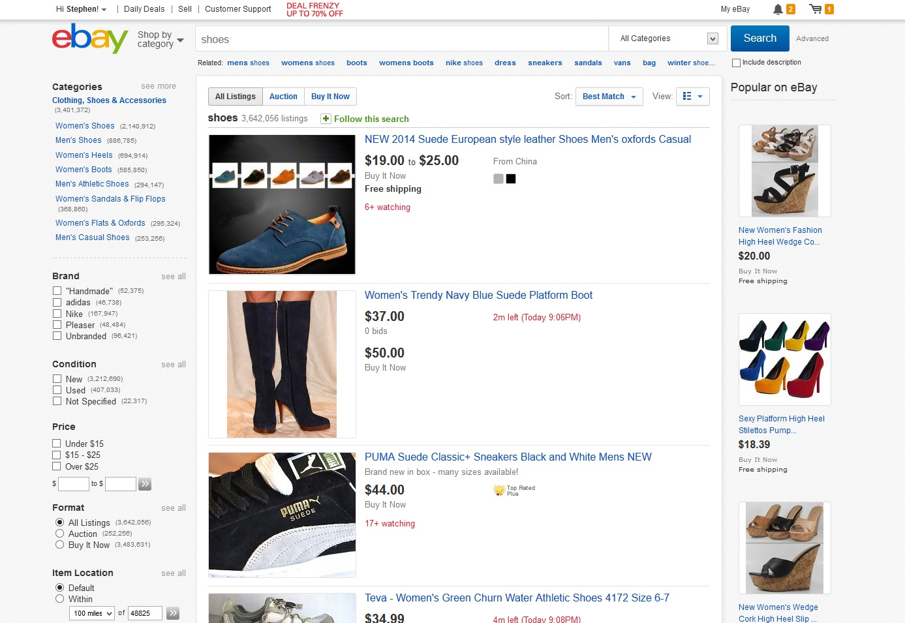
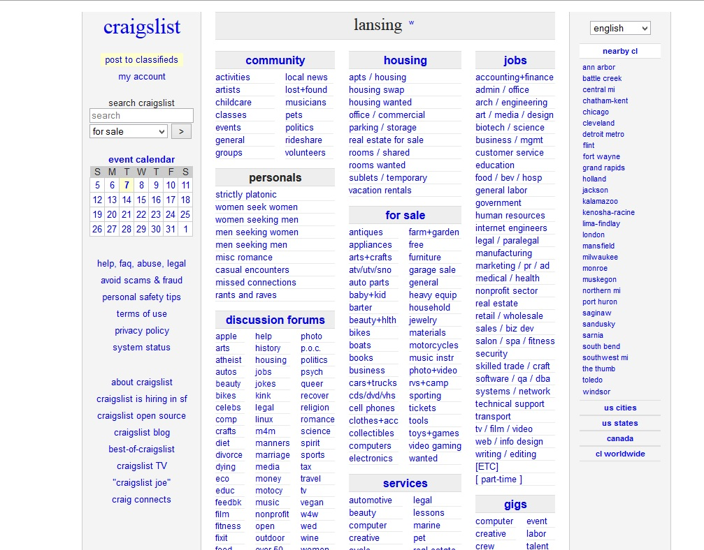

Good - http://imgur.com/
This is a good example of Ockham's Razor because the website is very simplistic as opposed to other image viewing websites. There arent many buttons to choose from maintaining the sites simplicity. It is also designed proportionally.
Bad - http://www.heggiespizza.com/
This is a bad example of Ockham's Razor because the website is too simplistic. There is barely any content and too much white space.
Good - https://designers.mx/
This is a good example of modularity because the website loads more images in a grid-like fashion without having to click another page or scroll forever.
Bad - http://leisofhawaii.com/
This is a bad example of modularity because the website scrolls down forever without having any sort of design or grid.
Good - https://www.apple.com/itunes/
This is a good example of signal-to-noise because the website is very simplistic looking and there isn't tons of ads, lists, photos, various colors to distract the viewer from where they want to navigate to.
Bad - http://www.theworldsworstwebsiteever.com/
This is a bad example of signal-to-noise because the website has way too much noise. There is no proportion or grid. There contains too many animations and different types of font. The background is annoying as wells as the images.
Good - http://www.woosterhound.com/
This is a good example of the Rule of Thirds because all of the objects contained on the front page are distributed evenly in thirds.
Bad - http://www.rollrollroll.com/
This is a bad example of the Rule of Thirds because the website has a font that continues across the page and doesnt end. The content isn't evenly aligned with the rest of the page either.
Good - http://www.ebay.com/
This is a good example of Hick's Law because the website has many searching options to choose from without being to confusing to read. All of the search options are conveniently located on the sidebar.
Bad - https://lansing.craigslist.org/
This is a bad example of Hick's Law because the website has too many links to look through to find what the user wants in a reasonable time. The font is boring and the links are piled one on top of another making it more difficult to read.
